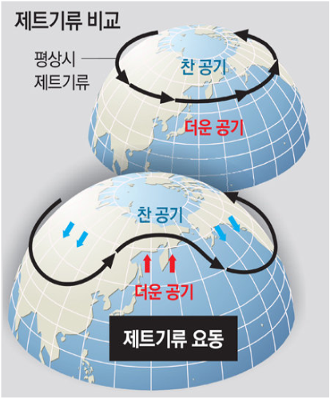
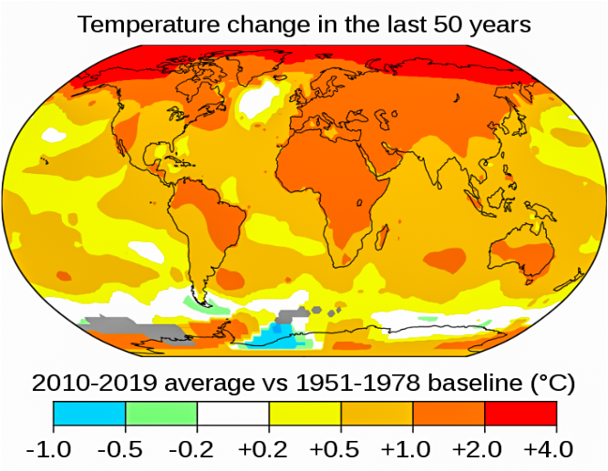

2020년 9월 미국 콜로라도주 덴버 지역이 섭씨 40도에 도달하는 날씨가 하루 만에 영하 2.2도까지 기온이 떨어지고,
10cm 이상의 눈이 쌓였다. 덴버 지역에서는 2000년 이후 20년 만에 눈이 내렸다. 지구온난화가 영향을 미쳤을까?
그렇다면 왜 이런 현상이 일어나는지 알아보자.
이는 미국 콜로라도주 덴버 지역에 20년 만에 덮친 한파는 제트기류 때문이다. 제트기류는 대류권과 성층권 사이에
위치하여 서쪽에서 동쪽으로 이동하는 공기를 말한다. 대류권과 성층권 사이에 위치한 제트기류는 서쪽에서 동쪽으로
흐르는 것이 아닌 동쪽에서 서쪽으로, 반대방향으로 흐르면서 제트기류가 무너진다. 지구온난화로 북극에 있는
얼음들이 녹아 해수면 상승을 불러오며 해수면 온도도 높아짐으로써 성층권에 충격을 주기 때문에 제트기류가
무너지고, 제트기류가 무너지면 북극에 머물던 차가운 공기가 남쪽으로 내려오기 때문에 미국 콜로라도주 덴버
지역에는 갑작스럽게 한파가 일어나는 것이다.
 출처 : (왼)동아일보 (오)MBC
이렇게 가속화되는 지구온난화로 기후변화는 점점 심각해지고 있다. 기후변화는 온실가스가 배출되면 지구의 에너지
방출을 방해하기 때문에 일어나는 현상이다. 방출되지 못한 에너지가 다시 지구로 돌아오면서 악순환이 계속되고
지구 평균 온도가 상승한다. 기후변화로 폭염과 한파, 더 강해진 태풍, 생물종의 멸종, 사라져가는 열대우림 등
여러가지 피해를 입는다. 기후변화로 인해 지구온난화가 계속되면 미래에는 어떤 모습일까?
우선 기후변화로 지구가 더워지면서 빙하가 녹는다. 그것으로 인해 해수면은 상승된다. 해수면 상승은 연안 침수와
함께 폭풍, 해일, 홍수가 잦아지고 바다와 강, 호수, 지하수 등 모든 물의 염도가 상승하고, 갯벌과 부두의 피해로
인한 경제적 손실 등 엄청난 재해를 가져오게 된다. 지구 온도가 0.5도만 더 올라도 해수면이 67cm나 상승하고 여름에
북극 빙하를 보지 못할 확률이 15배 높아진다. 서식지를 잃는 동식물도 두 배나 늘어난다. 지구온난화로 동물이나
식물들의 서식지도 점점 극지방쪽으로 옮겨가고 있다. 또 지구 온도가 3.5도만 올라가면 지구 생물의 40% - 70%가
멸종위기에 처한다. 그렇게 하면 지구에는 사람, 동물등 그 어떤 생명체도 살지 않는 죽음의 별이 될 수도있을 것이다.